本物の天気と時間の街で、集中。 English is below.
しくみ
- 時間を決めて、はじめる集中する時間（5〜120 分）を決めて、タイマーを始めます。
- 集中しているあいだ、工事が進む集中した時間だけ、ビルやランドマークが建っていきます。途中でやめても、建った分はなくなりません。
- 毎日つづけると、街が完成1 日に 25 分を 1 回なら、約 17 日で東京が完成します。
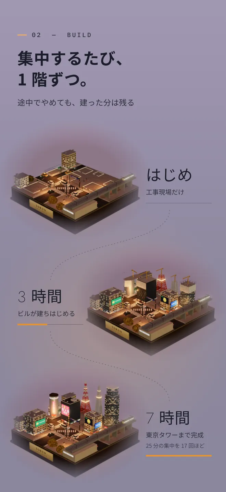
今の天気と時刻が、街に映る
箱庭には、その都市の今の天気と時刻が映ります。ロンドンに雪が降れば、箱庭にも雪が降ります。
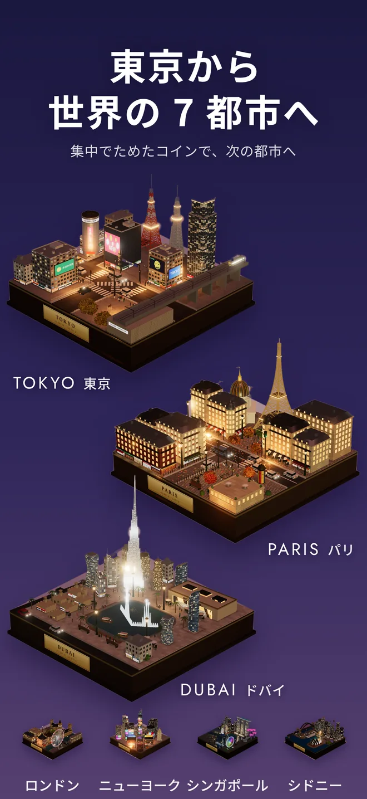
世界の 7 都市
東京・ニューヨーク・パリ・ロンドン・ドバイ・シンガポール・シドニー
集中してためたコインで、次の都市を開けられます（1 都市ずつ購入することもできます）。
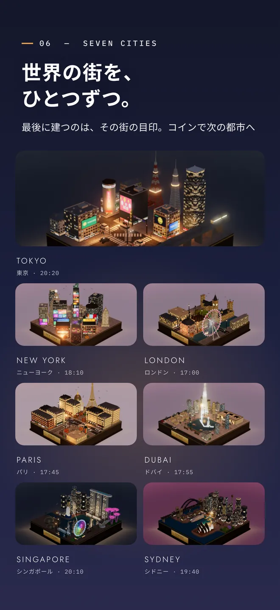
こんなときに
勉強に。仕事に。読書に。
画面を消しても、ほかのアプリを開いても、タイマーは続きます。
アプリの画面
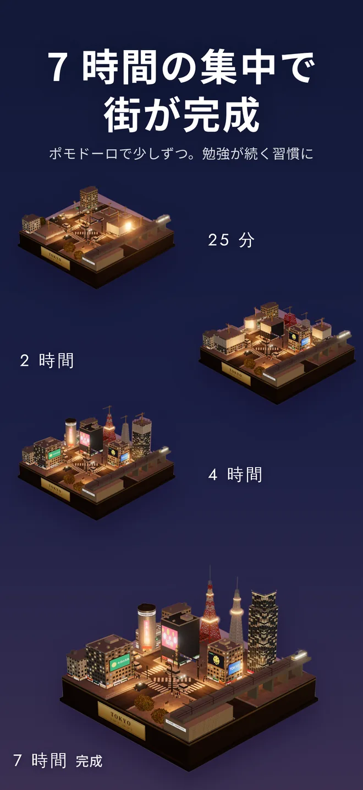
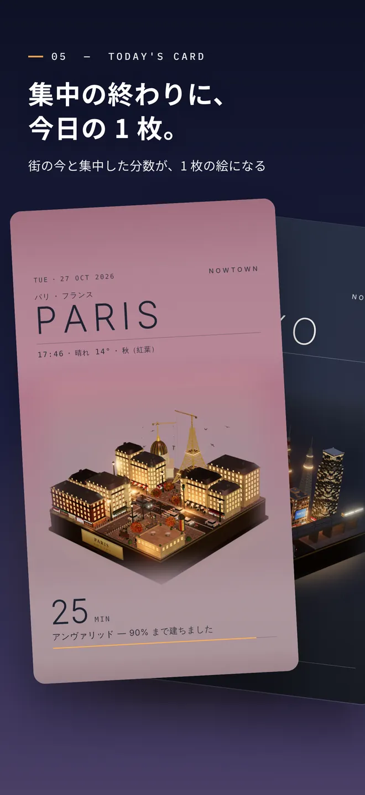
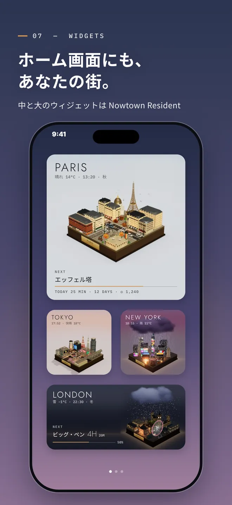
料金
広告はありません。集中のタイマー・基本の記録・小のウィジェット・ロック画面の残り時間は、無料で使えます。
有料のプラン「Nowtown Resident」（月額・年額・買い切り）では、中と大のウィジェット、集中の音（ノイズと重ねがけ）、くわしい記録、置き時計モードなどの特典が使えます。
iPhone（iOS 18 以降）
2026年12月1日 配信。App Store で予約受付中
よくある質問
街はどうやって育ちますか？
その街で集中した時間だけ、ビルやランドマークの工事が進みます。どの現場も一斉に工事が始まり、集中を終えたときに完成した建物が姿を見せます。途中でやめても、建った分はなくなりません。
天気や時刻は本物ですか？
はい。箱庭の街の、今の天気と時刻を映しています（天気は Apple WeatherKit を使っています）。
ほかの都市へ行くには？
集中してためたコインで開けるか、1 都市ずつ購入できます。
機種を変えたら、記録や買ったものはどうなりますか？
集中の記録・コイン・開けた都市・工事の進み具合は、あなたの iCloud（Apple ID）にも保存されます。新しい機種で同じ Apple ID の iCloud にサインインしていれば、アプリを入れるとそのまま戻ります。購入したものは、アプリの設定のいちばん下にある「購入を復元」で戻せます。
サブスクリプションを解約するには？
端末の「設定」→ 自分の名前 →「サブスクリプション」→ Nowtown から解約できます。期間が終わる 24 時間前までに解約すると、次の更新で請求されません。
ウィジェットやロック画面の残り時間が出ません
本アプリは iOS 18 以降で使えます。ロック画面の残り時間（Apple Watch も）と、小のウィジェットは、だれでも使えます。中と大のウィジェットは Nowtown Resident の特典です（住人でないときは、景色と都市名だけを表示します）。ウィジェットは、ホーム画面を長押しして左上の「編集」→「ウィジェットを追加」→ Nowtown から置けます。
アプリを閉じても音は続きますか？
集中しているあいだは続きます。右上の音のボタンがオンなら、集中中にアプリを閉じても、街の音と集中の音が集中の終わりまで流れます。集中していないとき（ホーム・休憩・一時停止中）にアプリを閉じると、音は止まります。
Nowtown Resident とは？
有料のプランです（月額・年額・買い切り）。中と大のウィジェット、都市のアイコン、くわしい記録、置き時計モード、街の写真と動画、集中の音（ノイズと重ねがけ）が使えます。集中・基本の記録・小のウィジェット・ロック画面の残り時間・閉じても鳴る音は、だれでも無料です。ファミリー共有に対応しています。
画面を消しても集中は続きますか？
はい。残り時間は終わる時刻から数えているので、画面を消しても、ほかのアプリを開いても続きます。
お問い合わせ
不具合やご意見は、こちらへお送りください。使っている端末と iOS のバージョン、どの画面で起きたかを書いていただけると助かります。
Focus timer for iPhone
A focus timer that builds a tiny city while you focus.
Coming December 1, 2026. Pre-order now on the App Store
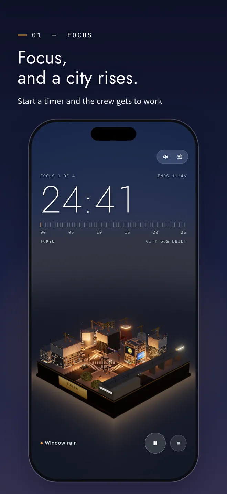
How it works
- Set a time and startChoose a focus time (5 to 120 minutes) and start the timer.
- The city goes up while you focusBuildings and landmarks are built with the time you focus. If you stop early, what has been built stays.
- Keep going, and the city is completeWith one 25-minute session a day, Tokyo is complete in about 17 days.
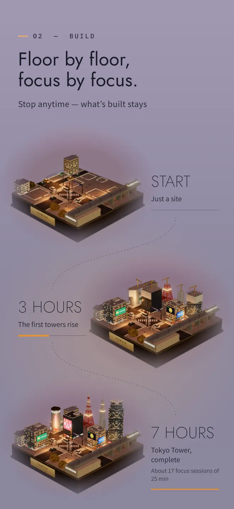
Real weather. Real time.
Each city shows its current weather and local time. When it snows in London, it snows in your diorama.
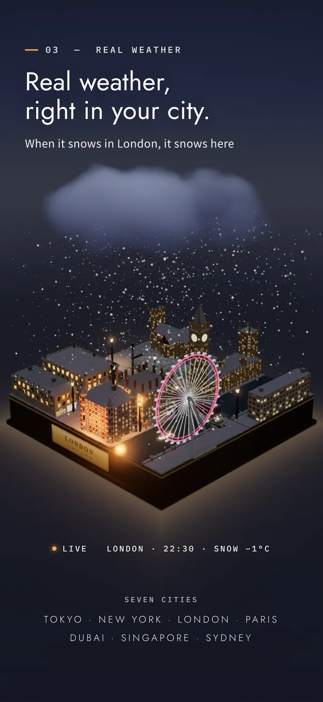
Seven cities
Tokyo, New York, Paris, London, Dubai, Singapore and Sydney
Open new cities with the coins you earn by focusing, or buy them one at a time.
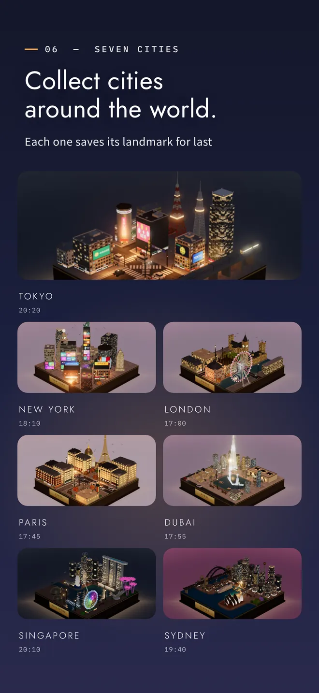
Made for
Studying.Working.Reading.
The timer keeps going when the screen is off or you switch apps.
Screens
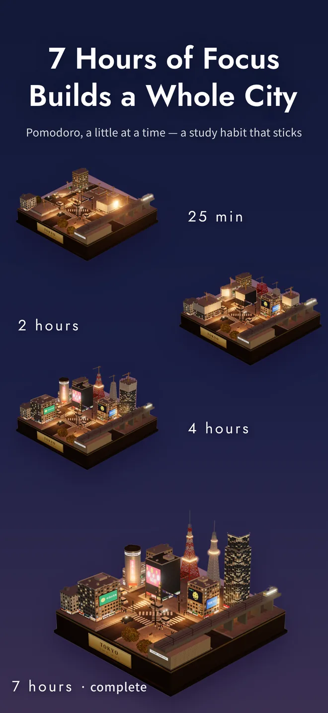
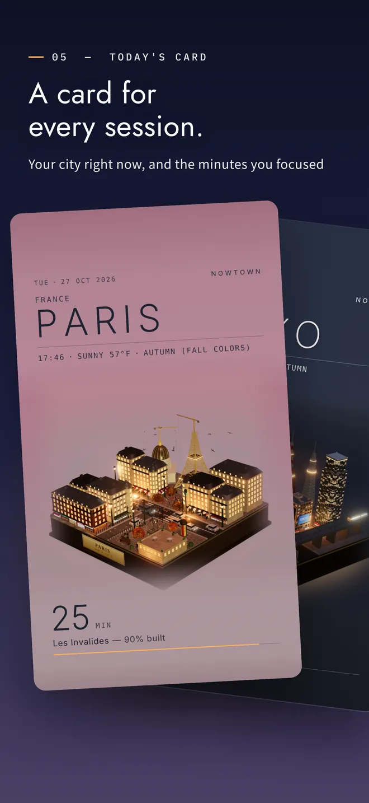
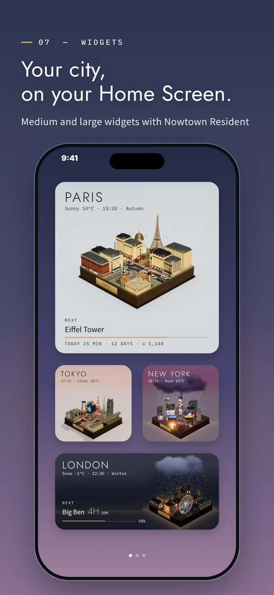
Price
No ads. The focus timer, basic history, the small widget and the Lock Screen timer are free for everyone.
Nowtown Resident, our paid plan (monthly, yearly or one-time), adds the medium and large widgets, more focus sounds (noise and layering), detailed records, desk clock mode and more.
iPhone (iOS 18 or later)
Coming December 1, 2026. Pre-order now on the App Store
Support
Real weather. Real time.
How does the city grow?
Buildings and landmarks are built with the time you focus in that city. Every site starts at once, and finished buildings are revealed when you end a focus session. If you stop early, what has been built stays.
Are the weather and time real?
Yes. The diorama shows the current weather and local time of each city (weather by Apple WeatherKit).
How do I visit other cities?
Open them with the coins you earn by focusing, or buy them one at a time.
I got a new device. What happens to my history and purchases?
Your focus history, coins, unlocked cities and building progress are also saved to your iCloud (Apple ID). If you are signed in to iCloud with the same Apple ID on your new device, they come back when you install the App. To restore purchases, tap "Restore Purchases" at the bottom of Settings in the App.
How do I cancel my subscription?
Go to Settings → your name → Subscriptions → Nowtown. Cancel at least 24 hours before the end of the current period to avoid the next charge.
The widget or the Lock Screen timer does not appear
The App requires iOS 18 or later. The Lock Screen timer (including Apple Watch) and the small widget are free for everyone. The medium and large widgets are part of Nowtown Resident (without it, they show the view and the city name only). To add a widget, touch and hold the Home Screen, tap Edit → Add Widget → Nowtown.
Does the sound continue when I close the App?
During a focus session, yes. If the sound button at the top right is on, the city sound and focus sounds keep playing until the session ends, even after you close the App. When you are not focusing (Home, a break, or while paused), the sound stops when you close the App.
What is Nowtown Resident?
Our paid plan (monthly, yearly or one-time). It includes the medium and large widgets, city app icons, detailed records, desk clock mode, photos and video of your city, and more focus sounds (noise and layering). Focusing, basic history, the small widget, the Lock Screen timer and background sound are free for everyone. Family Sharing is supported.
Does my session continue with the screen off?
Yes. The timer counts down to the end time, so it keeps going when the screen is off or you switch apps.
Contact
For bugs or feedback, please email us with your device model, iOS version and the screen where it happened.